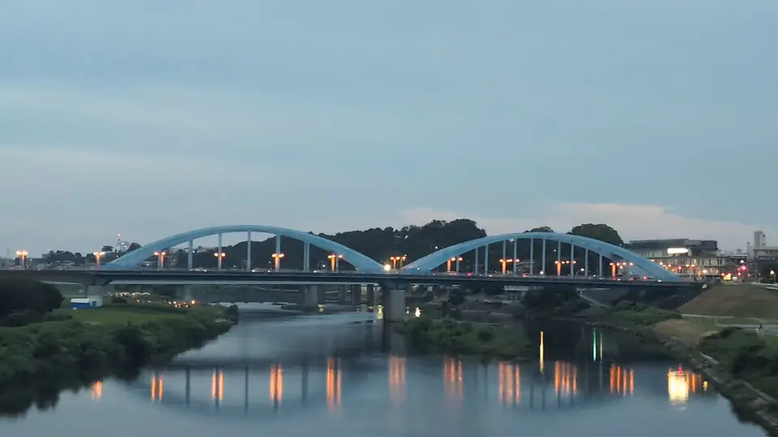

TOKAIDO SHINKANSEN WINDOW VIEW
Crossing the Tama on a blue arch: Maruko Bridge
A blue arch over the Tama River.

- Section
- Shinagawa → Shin-Yokohama, near the Tama River
- Seat side
- Seat E · mountain side
- Timing
- About 13 minutes after leaving Tokyo on a Nozomi train
- Photos
- 5 photos
What is this blue arch bridge?
Maruko Bridge is a National Route 1 crossing over the lower Tama River, linking Denenchofu-honmachi in Ota, Tokyo with Kami-Maruko in Nakahara, Kawasaki. The first bridge opened in 1934 as a key piece of infrastructure and served central-Tokyo traffic for nearly seventy years. Rising traffic and age eventually required replacement, and the current second-generation bridge was completed in 2000 as a braced-rib tied-arch bridge — an unusual form in Japan. Painted a distinctive blue, its design deliberately echoes the original's silhouette.
More: Wikipedia: Maruko Bridge (Japanese only)Ota City: Kamenokoyama Kofun (Tamagawadai kofun group) (Japanese only)@letus10: Maruko Bridge window article (Japanese only)
From Tokyo toward Shin-Osaka, watch the Seat E (mountain) side just before crossing the Tama River after Shinagawa. From Shin-Osaka toward Tokyo, look for the blue arch on the same Seat E side just as the train starts crossing the Tama River after leaving Shin-Yokohama.
The blue arch and a second, older face of the area
The current arch is what engineers call a braced-rib tied-arch — a curved main rib stiffened by diagonal cross-bracing. It is roughly 400 meters long, with a central arch span of over 160 meters. The blue color was chosen to blend with the Tama River's water and the riverside greenery, and today it forms a visual counterpart to the tall towers of Musashi-Kosugi rising on the opposite bank.
Just before the bridge on the Tokyo side lies Tamagawadai Park and the Tamagawadai kofun cluster. Its centerpiece, Kamenokoyama Kofun, is a keyhole-shaped tumulus built in the late 4th century and designated a National Historic Site. Finding a wooded ridge with a large ancient tumulus this close to central Tokyo adds an unexpectedly deep layer of time to a view otherwise dominated by concrete and river.
The bridge is also a popular filming location. In Shin Godzilla (2016), Godzilla's second form appears crawling up the Tama River with Maruko Bridge in the background. Together with the Tokyu Toyoko Line's Tama River bridge and the Musashi-Kosugi high-rises, it is one of the most recognizable urban river scenes on the Kawasaki-Ota border.
Location at a glance
Open mapSwitch between the spot and the Shinkansen viewpoint.
How to catch Maruko Bridge
1. Choose the window first
As you approach Shinagawa → Shin-Yokohama, near the Tama River, start watching from Seat E · mountain side. Use Live Guide while riding, or the map on this page before you board.
The clearest view lasts only a few seconds. Decide the seat side and window direction before it arrives rather than reaching for your camera late.
2. Highlights
Just before the train crosses the Tama, look far off on the Seat E side for the blue arch. The moment you start crossing, the river surface, the arch itself, and the Musashi-Kosugi towers beyond come into the window as a single urban composition. If you glance back toward Tokyo just before finishing the crossing, you can catch the wooded hill of Kamenokoyama Kofun too.
Maruko Bridge in photos



 Related
Musashi-Kosugi Towers
Related
Musashi-Kosugi Towers
 Related
Mt. Fuji from Ota
Related
Mt. Fuji from Ota
 Related
Mt. Fuji over Sagami Plain
Related
Mt. Fuji over Sagami Plain